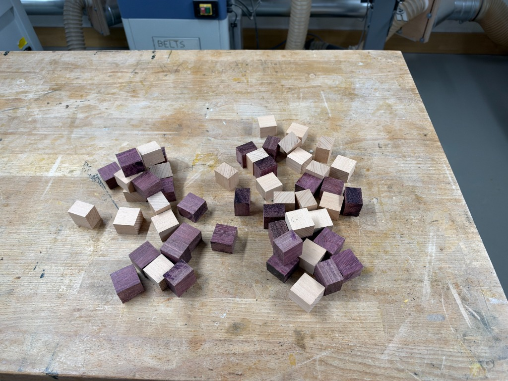
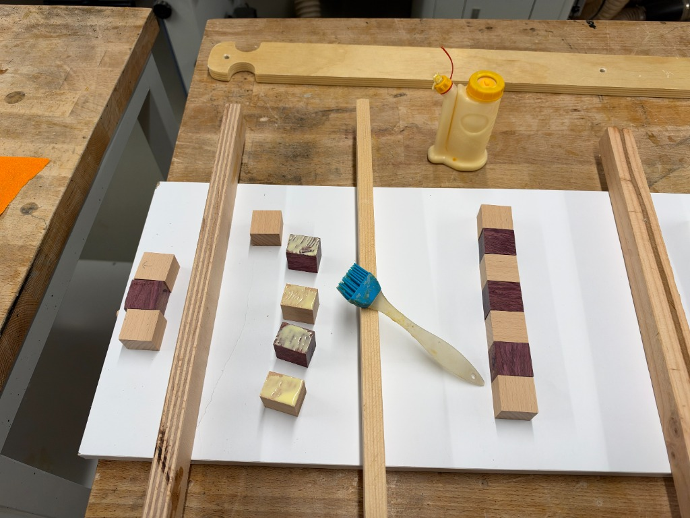
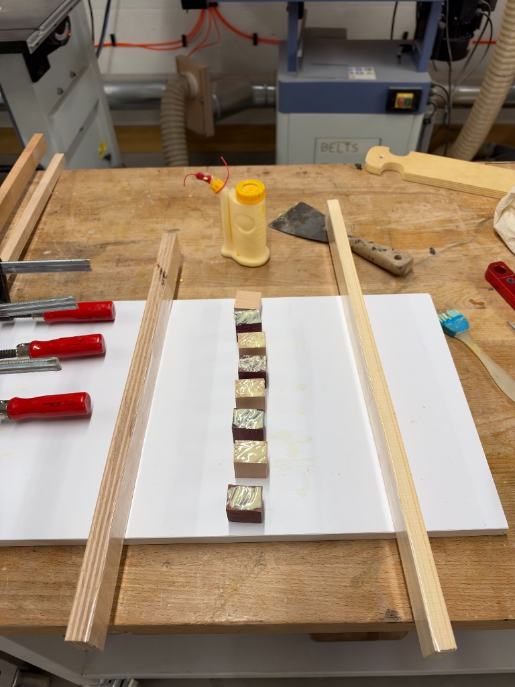
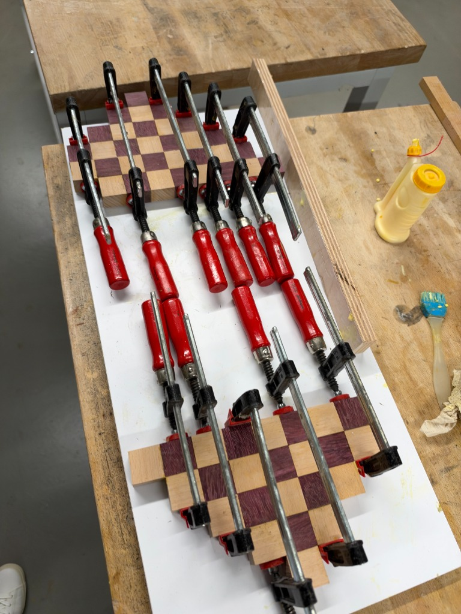
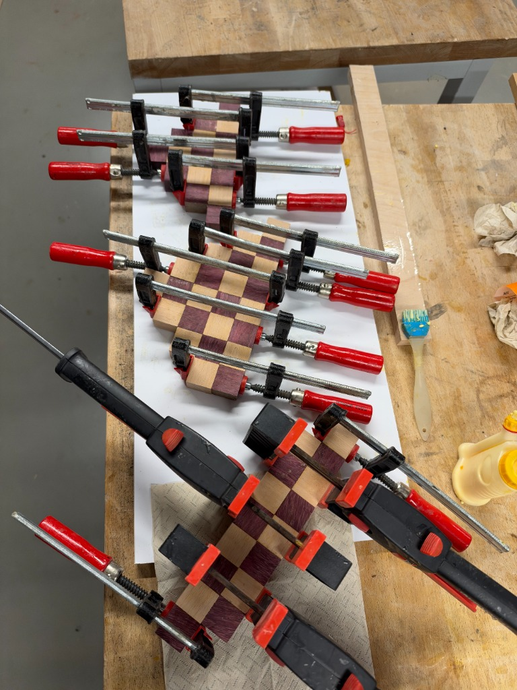
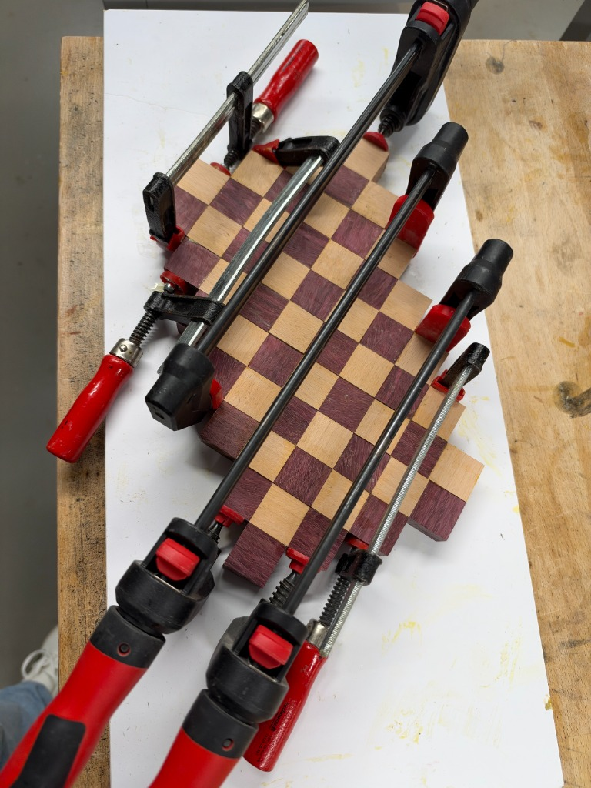
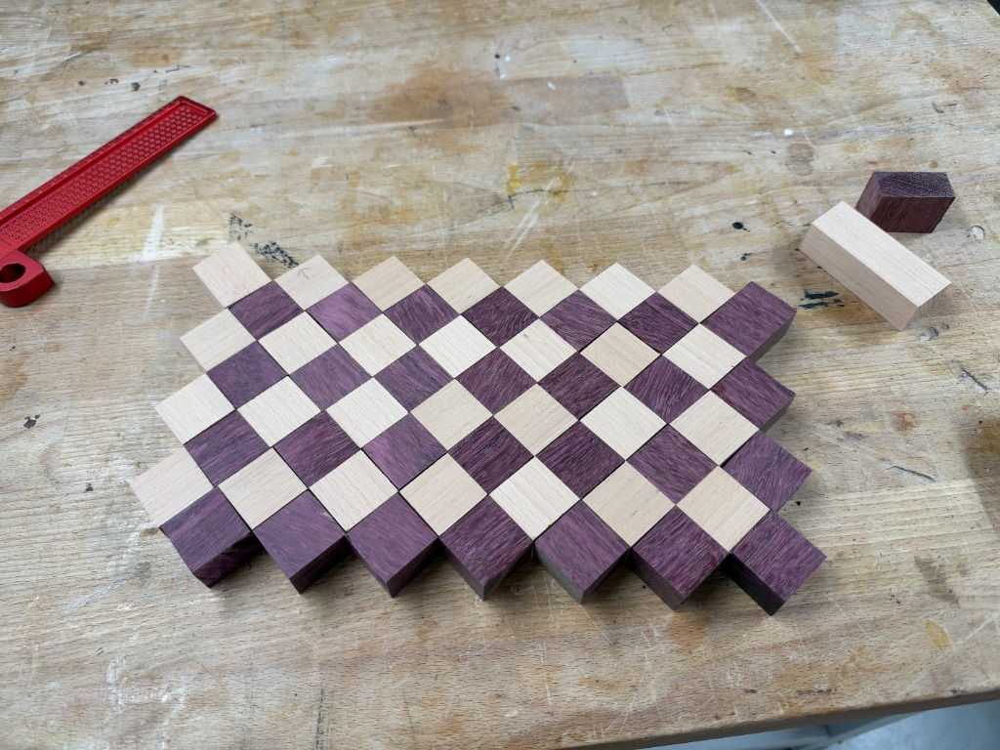

Planche à damier diagonal hêtre européen & amarante
Journal de fabrication pas à pas d'une planche à découper à damier diagonal en losanges de 19 cm × 28 cm × 2 cm. Analyse du comportement du bois, techniques de serrage par sous-ensembles, surfaçage de précision et révélation spectaculaire des fibres sous l'huile.
Spécifications & paramètres du projet
Dimensions finales
19,0 cm de largeur × 28,0 cm de longueur × 2,0 cm d'épaisseur (calibrée et poncée depuis 22 mm)
Disposition du motif
Damier diagonal isométrique à 45 degrés (grille en losanges)
Dimensions initiales des blocs
30 mm × 30 mm × 22 mm (calibrés à 30 mm × 22 mm à la raboteuse, tronçonnés à 30 mm à la scie à onglet)
Titebond III Ultimate (résine aliphatique étanche, conforme FDA pour contact alimentaire indirect)
Machines & gabarits
Raboteuse (30 × 22 mm), scie à onglet avec butée d'arrêt, cales de serrage en mélaminé avec ruban d'emballage
Cycle de ponçage
Ponçage orbital progressif aux grains 80 → 120 → 180 → 240 (mouillage de débourrage) → 320
Finition & protection
Bain de saturation profonde à l'huile minérale de qualité alimentaire USP, suivi d'un beurre de bois à la cire d'abeille bio
Lieu de fabrication
Zurich, Suisse
Transformation visuelle de la matière
Bois brut poncé vs Finition à l'huile minérale
Faites glisser le curseur pour observer comment la première application d'huile alimentaire métamorphose des fibres ternes et sèches en un violet amarante royal et un ambre doré chaleureux.
Une progression séquentielle : préparation du bois, confection des sous-ensembles, maîtrise des forces de serrage et finitions nobles.
Étape 01Débit & calibrage de précision
Calibrage à la raboteuse & tronçonnage en série
La création de cette planche géométrique a débuté à la raboteuse, où les carrelets de hêtre européen et d'amarante ont été méticuleusement dressés à une section rigoureuse de 30 mm × 22 mm, établissant des faces de référence planes, parallèles et des angles nets à 90 degrés. Ensuite, une scie à onglet équipée d'une butée d'arrêt positive a permis de tronçonner des blocs uniformes de 30 mm, produisant des dés rigoureusement identiques de 30 mm × 30 mm × 22 mm.
La cote de 22 mm correspondait à l'épaisseur brute initiale : conserver une surépaisseur délibérée de 2 mm permettait aux étapes ultérieures de surfaçage et de ponçage intensif après collage d'amener l'ensemble de la planche à son épaisseur finie finale, parfaitement plane, de 20 mm (2,0 cm).

Dés découpés disposés sur l'établi avant le tri et l'alignement en bandes.Cliquer pour agrandir
Conseil d'artisan : Sens du fil & arrachement de fibres
L'amarante est un bois particulièrement dense (dureté Janka de 2 520) aux fibres contrefilées et cassantes qui ont tendance à éclater en sortie de lame. L'utilisation d'une lame de tronçonnage dédiée à haute denture (80 dents, profil Hi-ATB) appuyée contre un pare-éclats sacrificiel en bois est indispensable pour éviter tout épaulement ou ébréchure sur les arêtes.
Étape 02Préparation des sous-ensembles
Disposition en bandes linéaires & cales de serrage
Tenter d'encoller simultanément des dizaines de pavés individuels dans une matrice en deux dimensions mènerait droit à l'échec : la colle prend trop rapidement, les pièces glissent sous la pression et le serrage devient incontrôlable. La méthode éprouvée consiste à fabriquer d'abord des bandes linéaires intermédiaires. Deux cales de guidage en bois ont été recouvertes de ruban d'emballage en polypropylène standard (la colle à bois n'adhère pas sur ce ruban) et fixées sur un panneau mélaminé bien plan. Les blocs ont été alignés selon des séquences alternées avant dépose des cordons de colle.
Gabarit d'alignement en mélaminé avec cales scotchées garantissant la rectitude le long de l'axe longitudinal.Cliquer pour agrandir
Étape 03Encollage & stratification
Application homogène de la colle au pinceau en silicone
Les surfaces en bois de bout et en coupe transversale absorbent avidement la colle par capillarité. Si l'adhésif n'est appliqué que par simples points, les pores d'extrémité pompent toute l'humidité, provoquant un « joint maigre » susceptible de se fissurer ultérieurement. Un pinceau à colle souple en silicone a été utilisé pour étaler un film uniforme et couvrant sur toutes les faces de contact des pavés de hêtre et d'amarante avant d'exercer la pression axiale.

Pinceau en silicone et flacon de colle aux côtés des sections de bandes linéaires en cours de séchage.Cliquer pour agrandir

Dosage maîtrisé de la colle pour limiter les bavures excessives tout en garantissant une soudure intime des fibres.Cliquer pour agrandir
Étape 04Montage à blanc & contrôle du motif
Mise en place de la matrice en damier diagonal à 45°
Une fois les bandes linéaires polymérisées et débarrassées de leurs bourrelets de colle au racloir, elles ont été décalées d'une unité les unes par rapport aux autres pour faire émerger le damier diagonal en losanges à 45 degrés. Un montage à blanc complet a été réalisé sur le panneau mélaminé d'établi. Des flèches repères ont été tracées au crayon sur les faces et le dos afin d'indexer rigoureusement la position de chaque bande et d'empêcher toute inversion accidentelle lors de la phase finale d'assemblage sous tension.
Montage à blanc du motif en losanges étagé. Notez le contour crénelé avant mise à dimensions définitive.Cliquer pour agrandir
Disposition complète du damier sur mélaminé. L'amarante brute dévoile sa nuance naturelle violet clair tirant sur la prune.Cliquer pour agrandir
Étape 05Maîtrise du glissement sous presse
Sous-ensembles sectionnels & serrage diagonal
Le serrage d'une matrice diagonale étagée représente l'un des défis les plus délicats en ébénisterie de précision. Comme les joints d'assemblage courent à 45 degrés par rapport aux chants extérieurs, exercer une pression directement dans la longueur engendre une force de cisaillement qui pousse inévitablement les bandes à glisser et fausse l'équerrage. Pour surmonter cet obstacle, la planche a été assemblée en deux sections triangulaires distinctes dans un premier temps.

Serrage par étapes : Deux sous-ensembles pressés indépendamment sous de robustes serre-joints à pompe.Cliquer pour agrandir
Forces de serrage parallèles appliquées perpendiculairement aux plans de joint.Cliquer pour agrandir

Serrage hybride : Les serre-joints en acier assurent la compression principale tandis que les pinces rapides maintiennent l'alignement latéral.Cliquer pour agrandir
Étape 06Collage général
L'assemblage maître & compression globale de la matrice
Une fois les sous-sections planes et parfaitement prises, le joint diagonal central a été dressé à neuf et l'ensemble de la matrice a été réuni pour le collage général définitif. Quatre lourds serre-joints parallèles ont assuré la compression axiale le long de la diagonale, tandis que des serre-joints opposés et des cales empêchaient le plateau de tuiler ou de gondoler sous l'intense tension mécanique.

Collage général : Pression de serrage intégrale répartie le long des axes à 45 degrés.Cliquer pour agrandir
Gestion des bavures de colle
Ne jamais essuyer la colle fraîche avec une éponge humide sur du bois de bout : l'eau dilue la colle et la fait pénétrer profondément dans les vaisseaux ouverts, créant des taches blanchâtres indélébiles qui bloqueront ensuite la pénétration de l'huile. Il convient plutôt d'attendre une vingtaine de minutes que les bavures prennent une consistance caoutchouteuse gélifiée, pour les trancher net et sans effort à l'aide d'un racloir bien affûté ou d'un ciseau à bois.
Étape 07Surfaçage, équerrage & ponçage
Mise à l'équerre au format 19 cm × 28 cm & ponçage fin
Après 24 heures de polymérisation complète, les chants crénelés ont été tracés à l'équerre de précision et à la règle d'atelier, puis délignés net à la scie plongeante sur rail avec une lame de finition ultra-fine pour obtenir le périmètre définitif de 19,0 cm × 28,0 cm. La planche avait démarré avec des carrelets de 22 mm d'épaisseur brute ; par un surfaçage soigné et un ponçage orbital progressif sur les deux faces (grains 80 → 120 → 180 → 240), le plateau a été nivelé jusqu'à son épaisseur finale homogène de 20 mm (2,0 cm). Au grain 240, la planche a reçu une fine vaporisation d'eau tiède (mouillage de débourrage) pour redresser les fibres écrasées, a séché à cœur, puis a reçu un ponçage ultime au grain 320 jusqu'à offrir le toucher soyeux d'une pierre polie.

Vérification des angles droits à 90 degrés et préparation des coupes de référence avec des instruments de traçage de précision.Cliquer pour agrandir
Le plateau calibré et poncé à l'état brut (grain 320). Douceur soyeuse sous la main, prêt pour la finition à l'huile.Cliquer pour agrandir
Étape 08L'apothéose : Saturation à l'huile
Révélation sous l'huile : L'éveil flamboyant des fibres
La récompense suprême du travail des bois nobles : l'application de l'huile minérale pure de qualité alimentaire. Les pores assoiffés du bois de bout agissent comme d'innombrables capillaires, aspirant l'huile profondément dans la structure cellulaire. Instantanément, l'amarante aux tons lilas timides s'embrase en un violet magenta royal profondément saturé, tandis que le hêtre européen s'illumine d'un ambre doré chaleureux. Deux couches généreuses d'huile minérale ont été appliquées jusqu'à refus, suivies d'une couche lustrée de beurre de bois artisanal (cire d'abeille bio et huile minérale) conférant à la surface un éclat satiné au toucher soyeux.
La planche finie sur l'établi : Damier vibrant d'amarante pourpre et de hêtre lumineux en bois de bout.Cliquer pour agrandir
Archives d'atelier
Galerie complète de fabrication (13 photos)
Cliquez sur chaque photo pour ouvrir la visionneuse haute résolution et examiner les détails d'assemblage.
01 • Débit des blocs bruts
02 • Cales de guidage
03 • Encollage linéaire
04 • Imprégnation des joints
05 • Contrôle d'assemblage
06 • Composition du motif
07 • Serrage par sections
08 • Presse double section
09 • Matrice de serre-joints
10 • Serrage général
11 • Équerrage de précision
12 • Ponçage grain 320
13 • Finition huilée finale
Pièce d'artisanat culinaire
Protocole d'entretien & longévité
Comment prendre soin d'une planche à découper en bois de bout pour qu'elle traverse les générations.
Ce qu'il faut faire
Laver les deux faces à la main avec une eau tiède et un savon doux immédiatement après usage.
Sécher soigneusement au torchon et ranger sur chant pour un séchage homogène sur toutes les faces.
Appliquer de l'huile minérale de qualité alimentaire une fois par mois ou dès que le bois semble sec ou pâlit.
Renouveler l'application de beurre de bois à la cire d'abeille tous les 3 à 4 mois pour une imperméabilité optimale.
Ce qu'il ne faut jamais faire
Ne jamais mettre au lave-vaisselle : La chaleur extrême, l'humidité et les détergents agressifs détruiraient la colle et voileraient irrémédiablement le bois.
Ne jamais laisser tremper dans l'évier ni immerger sous l'eau.
Ne jamais faire sécher à plat sur le plan de travail (l'humidité piégée au-dessous provoque le tuilage du panneau).
Ne jamais employer d'huiles végétales de cuisine comme l'olive ou le colza (elles rancissent, deviennent poisseuses et dégagent de mauvaises odeurs).